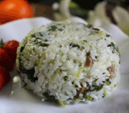

糖醋排骨
咸肉菜饭
 菜名：糖醋排骨
菜名：糖醋排骨
市场价格：26
会员价格：24
配料：排骨、糖、醋
菜品类型：炒菜
做法：
1. 猪小排冼净，晾干水份备用；
2. 锅内倒少量油，烧热之后，爆香姜片；
3. 放入排骨，一直煸炒到排骨变色后，表面金黄微焦；
4. 此时就可以放入黄金比例中的调料了，顺序是：先放一汤勺料酒，接着两汤勺酱油，三汤勺米醋最后四汤勺白糖，炒匀；
5. 再倒入能没过排骨的开水，调中小火焖20分钟；
6. 20分钟后调入盐，开大火收汁，收到汁浓色亮时，撒入芝麻点缀即可出锅（锅里剩下的姜片丢掉不用，最后大火收汁时注意多翻动锅内的排骨，避免烧焦哟！）。

菜名：咸肉菜饭
市场价格：15
会员价格：12
配料：咸肉、青菜、米饭
菜品类型：炒饭
做法：
1.咸肉一块（泡开），上海青适量。
2.咸肉切小丁，上海青切段（梗切小点，叶子切大点）。
3.生姜用擦成末，用少许水浸泡。（咸肉有一股咸肉的腥味，所以要去掉）。
4.锅里不放油，中火煸炒咸肉，直到干松，泼上点生姜水，两汤匙油，继续炒，炒到咸肉全身都沾上油以后开大火，把青菜放进去，翻炒几下（千万别久了，不能出水。青菜上沾了油即可。
5.长粒糯米和普通米一比一混合，淘洗干净。把炒好的咸肉和米，剩下的生姜水搅拌均匀。
6.水的比例一定要掌握好，因为青菜还要出水，所以水刚好淹没米即可，不要怕会硬放入电饭煲，按下煮饭键，等跳开后焖十分钟即可。